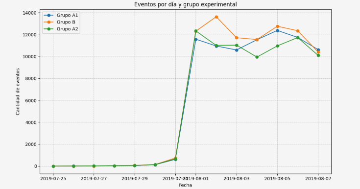
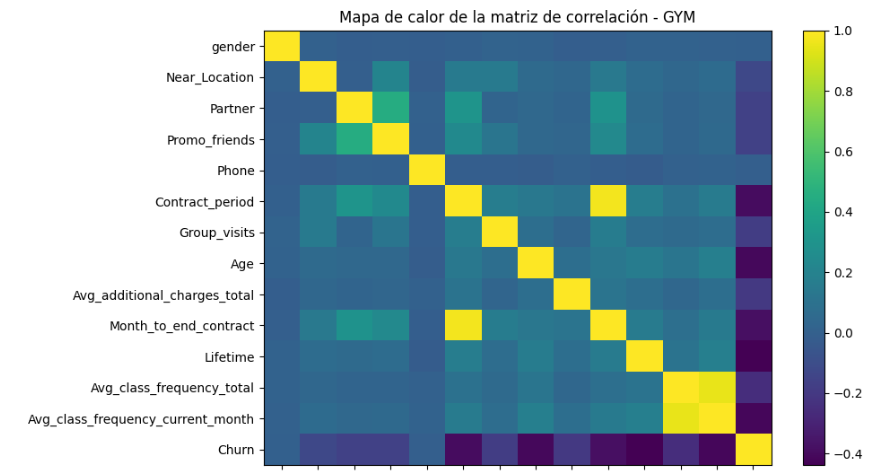
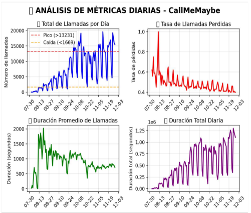

Analista de Datos · Contador Profesional
Analista de datos enfocada en transformar información compleja en decisiones estratégicas y accionables.
Me caracterizo por una fuerte orientación al detalle, pensamiento analítico y una visión crítica que me
permite identificar patrones, oportunidades y riesgos dentro de grandes volúmenes de datos.
Cuento con experiencia en análisis exploratorio, visualización de datos y automatización de procesos, lo
que me permite optimizar flujos de trabajo, reducir tiempos operativos y mejorar la calidad de la
información para la toma de decisiones. Tengo facilidad para traducir datos técnicos en insights claros
y comprensibles para equipos multidisciplinarios.
Me destaco por mi capacidad para estructurar, limpiar y modelar datos, así como por el uso de herramientas
analíticas y de visualización para construir dashboards intuitivos y reportes de alto impacto. Poseo una
mentalidad orientada a la mejora continua, enfocada en eficiencia, precisión y valor agregado.
Soy una persona proactiva, organizada y adaptable, con habilidades para trabajar tanto de forma autónoma
como en equipo, orientada a generar impacto real en la toma de decisiones.
Pruebas A/B y Embudo de Ventas.
Resultados de las pruebas de hipótesis:
| Evento | A1 vs A2 | A1 vs B | A2 vs B |
|---|---|---|---|
| OffersScreenAppear | 2.057256e-10 | 1.450242e-10 | 0.925183 |
| CartScreenAppear | 2.734915e-11 | 1.877726e-21 | 0.007451 |
| PaymentScreenSuccessful | 1.314295e-18 | 5.785375e-11 | 0.014494 |
Esto indica que no existen diferencias estadísticamente significativas entre los grupos A1, A2 y B en los eventos de conversión.
Se establecio el nivel de significancia estandar α = 0.05 (5%) Esto significa que aceptamos un 5% de probabilidad de cometer un error tipo I, es decir, rechazar una hipótesis nula verdadera (falso positivo).
Construir un modelo para predecir la cancelación de usuarios.
Resultados de la automatizacion del modelo:
Los clústeres muestran patrones completamente distintos:
1. CLUSTER PROPENSO A IRSE (ALTO RIESGO) Clúster 3 — 57.3% de churn Es con diferencia, el grupo más riesgoso. Los usuarios de este clúster suelen tener: baja asistencia, baja frecuencia actual, poco uso histórico, poco interés en clases grupales, menor lifetime, contratos cortos
2. CLUSTERES LEALES (BAJO RIESGO) Clúster 2 — 2.2% churn (EXCEPCIONALMENTE LEAL) Los mejores clientes: alta actividad, alto gasto adicional, alto lifetime, muchos meses restantes de contrato Clúster 1 — 9% churn Clientes estables y comprometidos.
3. CLUSTERES DE RIESGO MODERADO Clúster 0 — 24.6% Clúster 4 — 26.7% Clientes que: muestran consumo promedio tienen actividad irregular no están tan comprometidos como 1 y 2 pero no tan malos como el 3.
Resumen Ejecutivo con Kpís y Dashboard.
Recomendaciones Estrategicas:
1. Intervención de Operadores Problemáticos
173 operadores problemáticos requieren acción inmediata
Impacto: Reducción directa del 15.8% de operadores ineficientes
Acción: Auditoría individual y plan de mejora personalizado
2. Redistribución de Carga en Picos de Demanda
Días críticos identificados: 11 de noviembre (19,640 llamadas) y 11 de octubre (19,160 llamadas)
Impacto: Reducir tiempo de espera de 298.54 segundos
Acción: Protocolo de escalamiento automático
3. Optimización de Operadores Estrella
Solo 4 operadores estrella de 1,093 total
Impacto: Replicar mejores prácticas
Acción: Programa de mentoría y estandarización
4. Gestión de Anomalías de Volumen
624 registros anómalos detectados
Impacto: Estabilizar flujo operativo
Acción: Sistema de alertas tempranas